01 · 노트
지금 하는 일이 먼저 보이는 노트
오늘, 앞으로 탭이 달린 종이 한 장이에요. 맨 위 하루 띠에 지금 하는 일이 손글씨로 크게 적히고, 남은 시간은 옆 동그라미에 보여요. 그 아래로 다음 일정과 오늘 할 일이 이어져요.
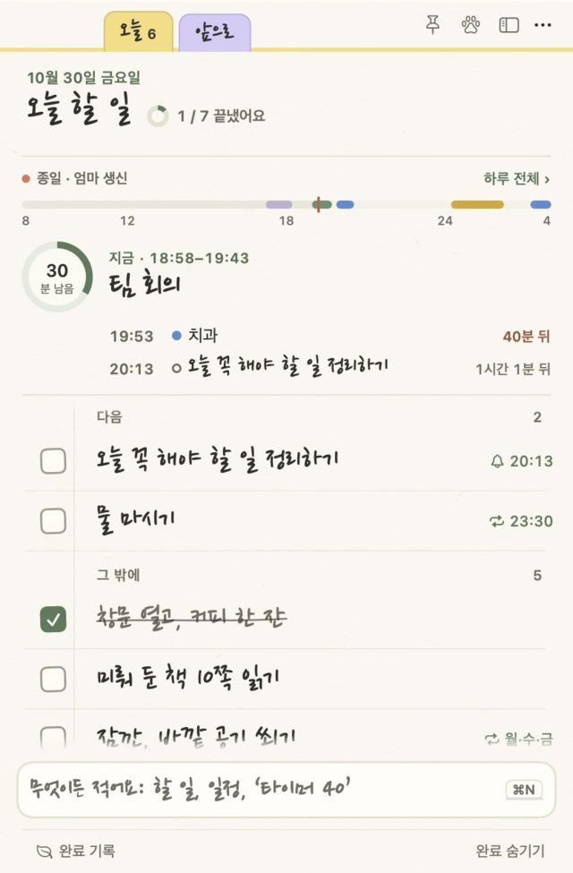
할 일을 적고 체크하는 노트예요. 맨 위에는 지금 하는 일과 남은 시간이 보이고, 알림은 종이 고양이가 들고 와요. 계정 없이 내 컴퓨터에 파일로 저장해요.
Windows 10/11에서도 써요. Windows용 내려받기 1.34.0
둘러보기
하루의 흐름
아침에 적어 두면 낮에는 지금 할 일을 먼저 보여 주고, 저녁에는 남은 일을 같이 정리해요.
맨 아래 입력 줄에 적기만 하면 돼요. 할 일인지 일정인지 알아듣고 칩으로 보여 줘요.
목록 위 하루 띠에 지금 하는 일과 남은 시간이 떠 있어요. 하루 전체가 궁금하면 눌러서 펼쳐요.
저녁(처음에는 8시)에 남은 할 일을 내일로 넘길지 물어요. 그때 못 봤으면 다음 날 아침에 다시 물어요.
기능
할 일, 일정, 타이머, 알람을 모두 입력 줄 하나로 넣어요. 잘못 알아들었으면 Tab을 눌러 바꾸고, 이미 넣었다면 안내에 뜨는 ‘바꾸기’를 눌러요.
날짜와 시각을 함께 적었어요.
내일 하루 띠와 일정표에 색 블록으로 들어가요.
‘까지’로 마감을 적었어요.
앞으로 탭의 금요일 칸에 마감으로 보여요.
‘타이머’ 뒤에 분을 적었어요.
할 일 이름을 붙여 ‘보고서 25분 집중’이라고 적으면 집중 카드가 돼요.
‘평일’처럼 울릴 요일을 붙였어요.
평일 아침마다 울려요. 울릴 때 5분, 10분, 15분 뒤로 미룰 수 있어요.
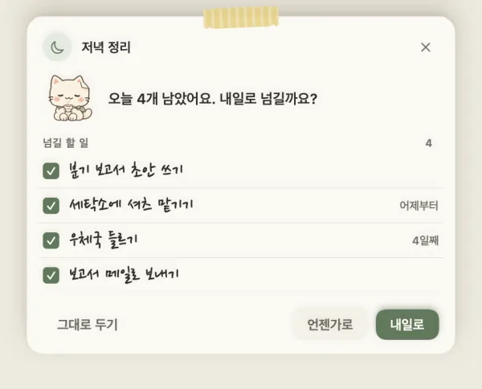
남은 할 일을 하나씩 보면서 내일로 넘기거나, 언젠가로 미루거나, 그대로 둬요.

Dock(Windows는 작업 표시줄) 위에서 숨 쉬고 걸어 다니다가, 알림 시간이 되면 할 일을 들고 와요. 다 끝내면 축하도 해 줘요. 가끔 ‘5분 쉬어 갈까요?’ 하고 묻는데, 답 단추를 누르면 5분 타이머가 시작돼요.
두 컴퓨터에서 같은 공유 폴더를 저장 위치로 고르면 목록 하나를 같이 써요. 거의 같은 때 양쪽에서 고쳐도 변경이 다 남고, 같은 메모는 두 글을 합쳐요. 파일은 그 클라우드 서비스가 옮겨요.

시스템이 어두운 모드면 창이 모두 불 끈 방의 종이 색으로 바뀌어요. 책상 → 꾸미기의 ‘낮 · 밤’에서 하나로 정해 둘 수도 있어요. 글자 대비는 낮과 밤 모두 웹 접근성 기준(WCAG AA)에 맞췄어요.
타닥냥
타닥냥은 화면 구석에서 방석에 기대 앞발로 두드리는 고양이예요. 종이냥 펫과 따로 켜고 끄고, 책상 → 종이냥의 ‘타닥냥’ 칸에서 정해요.
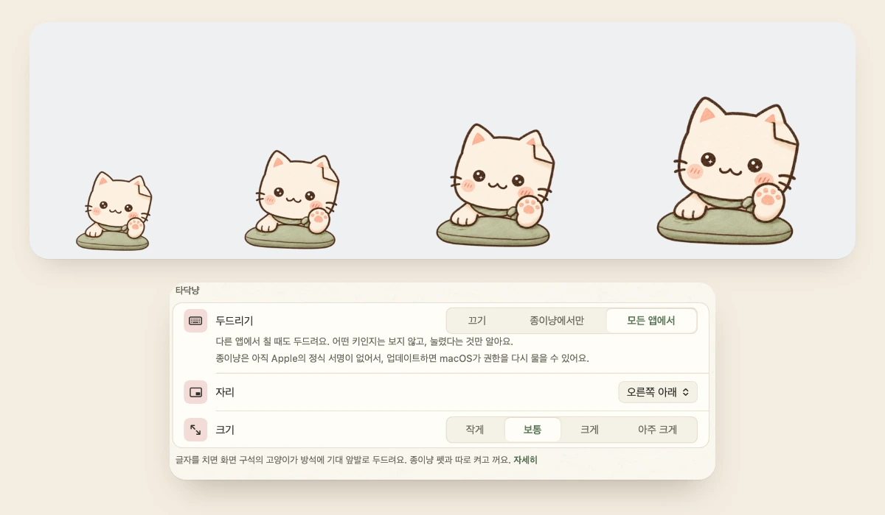
달력 위젯
오늘부터 이번 달 벽 달력까지 일곱 가지 위젯 가운데 골라 4개까지 둬요. 음력 날짜와 한국 공휴일 이름도 처음부터 보여요. 책상 → 일정 → 바탕화면 위젯에서 더해요.
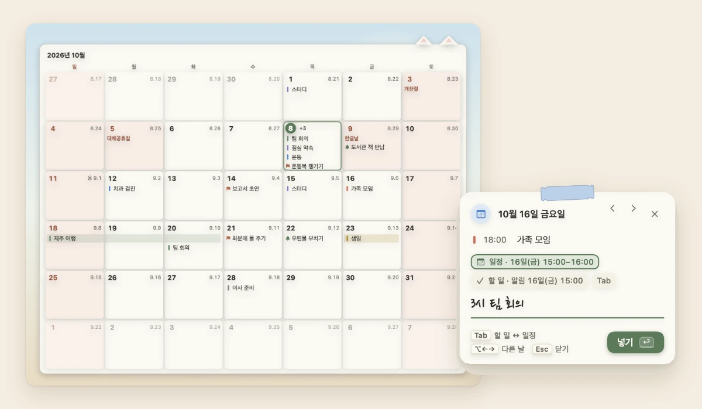
반복과 달력
‘매주 월 분리수거’처럼 반복하는 할 일이 앞으로 돌아올 날마다 보여요. 책상 달력, 위젯, 날짜 쪽지, 벽 달력이 모두 같아요.
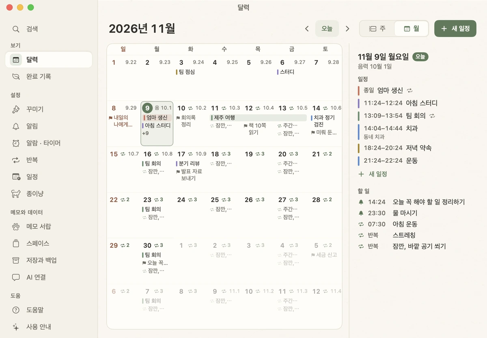
열다섯 종이
책상 → 꾸미기 → 종이에서 고르면 노트, 달력, 위젯, 쪽지, 책상, 메모 서랍이 같은 종이로 바뀌어요. 밝은 종이 열하나, 어두운 종이 넷이에요.
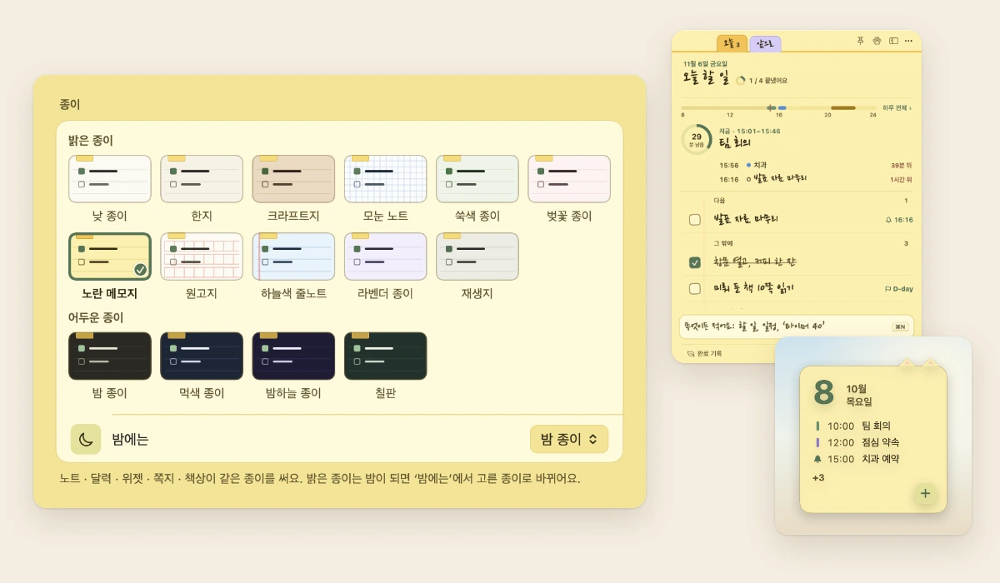
할 일 스페이스
할 일을 회사, 집, 공부처럼 스페이스로 나눠요. 오늘 한 장에는 그대로 모두 보이고, 줄 왼쪽 끝에 그 스페이스의 색 띠만 붙어요.
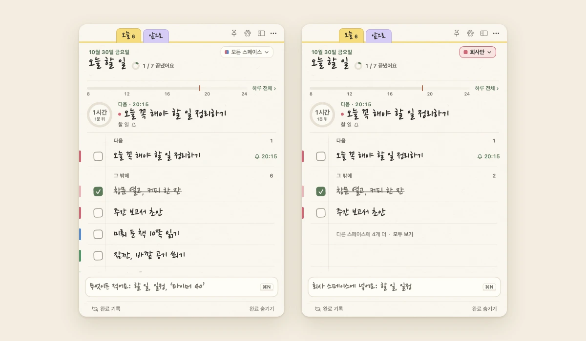
스페이스별로 묶기
오늘 할 일을 스페이스마다 모아 볼 수 있어요. 머리말의 ‘모든 스페이스 ▾’에서 켜거나 ⌥⌘G(Windows는 Ctrl+Shift+G)를 눌러요.
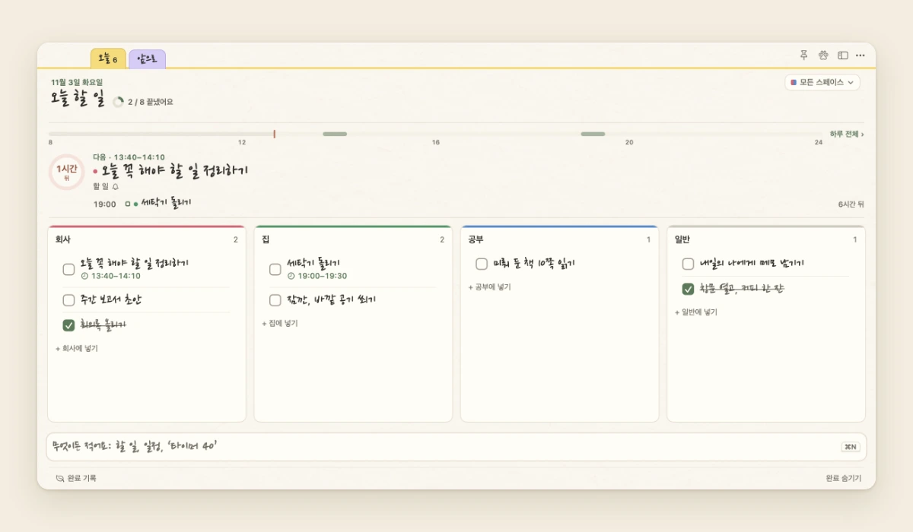
자동 백업
저장 폴더를 하루 한 번 백업 파일(.jongi)로 남겨요. 가져오기나 되돌리기처럼 목록을 덮어쓰기 전에도 한 번 더 남겨요.
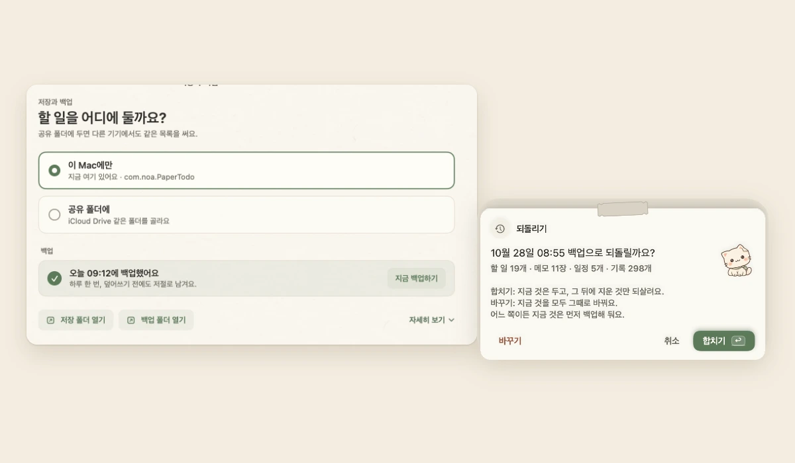
메모 서랍
어떤 앱을 쓰다가도 화면 끝에서 서랍을 꺼내 메모를 보고, 바로 적고, 그 자리에서 고쳐요. 예전 노트의 메모 탭에 쓴 메모는 서랍의 ‘메모’ 폴더에 그대로 있어요.
메모 서랍
1.46(Windows 1.31)에서 메모 서랍을 많이 다듬었어요. 크게 보면 서랍이 화면 쪽으로 넓어지고, 아래 줄에 글자 수가 보여요.
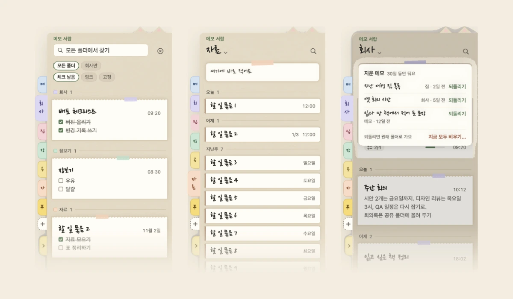
메모 글꼴
책상 → 메모 서랍의 ‘메모 글꼴’에서 글꼴, 코드 글꼴, 글자 크기, 줄 간격, 문단 간격을 골라요. 서랍의 모든 메모와 카드에 같이 써요.
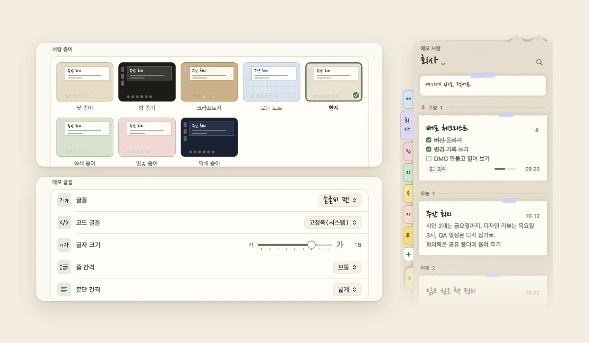
그 밖에
Mac 1.49 · Windows 1.34에서 노트, 위젯, 속도, Claude 연결도 손봤어요.
디자인
목록 위에 오늘을 어떻게 보여 줄지에 시간을 가장 많이 썼어요. 1차와 2차는 하루 전체를 보여 줬는데, 써 보니 필요한 건 지금 하는 일과 남은 시간이었어요.
하루를 막대 한 줄로 보여 주고, 지금과 다음은 한 문장으로 적었어요.

6시간 눈금을 넣고, 시간을 정한 할 일을 막대 아래에 놓았어요.

카드를 빼고 지금 하는 일을 크게 썼어요. 하루 전체는 눌러야 펼쳐져요.

만든 방식
Mac은 Swift(SwiftUI + AppKit), Windows는 Electron + TypeScript로 따로 만들었어요. 코드는 나누지 않고, 두 앱이 같은 시험 사례 표를 통과하게 해서 동작을 맞춰요.
질문
네. 결제도, 잠긴 기능도 없어요. 소스 코드는 GitHub에 Apache License 2.0으로 공개돼 있어요.
계정도 서버도 없어요. 처음에는 이 컴퓨터 안의 종이냥 폴더에, 원하면 내가 고른 폴더에 파일로 저장돼요. 폴더는 책상 → 저장과 백업에서 바꿔요. 자세한 건 개인정보 안내에 있어요.
네. 두 컴퓨터에서 같은 공유 폴더(iCloud Drive, OneDrive, Dropbox 등)를 저장 위치로 고르면 돼요. 기기마다 보일 스페이스도 따로 정할 수 있어요.
아니요. 다섯 버전에 걸쳐 만들었고 잘 동작했지만 뺐어요. 업무 일정이 개인 공간에 섞이는 게 싫었고, 같이 써 본 사람들도 같은 이야기를 했어요. 자세한 이유는 결정 기록에 적었어요.
코드 서명을 하지 않은 빌드라서 그래요. Mac은 응용 프로그램 폴더에서 우클릭 → 열기를 누르고, 그래도 막히면 시스템 설정 → 개인정보 보호 및 보안에서 그래도 열기를 눌러요. Windows는 SmartScreen 창에서 추가 정보 → 실행을 눌러요.
한국어, 영어, 네덜란드어를 지원해요. Mac은 macOS 14 이상의 Apple Silicon, Windows는 10/11 x64에서 돌아가요. 다만 Windows 버전은 macOS 위 Electron에서만 확인했고, 실제 Windows PC에서는 아직 시험하지 못했어요.
무료예요. 코드 서명이 없는 빌드라 처음 한 번은 열기를 허락해 주세요.
JongiNyang-1.34.0-x64.exe를 실행해요.무설치 zip · Claude 데스크톱 확장 파일 · 파일 확인값 · 릴리스 노트
릴리스마다 파일의 SHA-256 값을 파일 확인값(SHA256SUMS)과 릴리스 노트에 적어 둬요. 받은 파일의 값이 같으면 올린 그대로예요. 값이 다르면 열지 말고 지워 주세요.
shasum -a 256 ~/Downloads/JongiNyang-1.49.0.dmgGet-FileHash "$HOME\Downloads\JongiNyang-1.34.0-x64.exe" -Algorithm SHA256